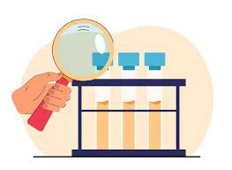

São experimentos de laboratório, embora você possa realizar um experimento controlado fora de um ambiente de laboratório! Em um experimento controlado, você compara um grupo experimental com um grupo de controle. Nesse grupo se usa a variavel dependente.
